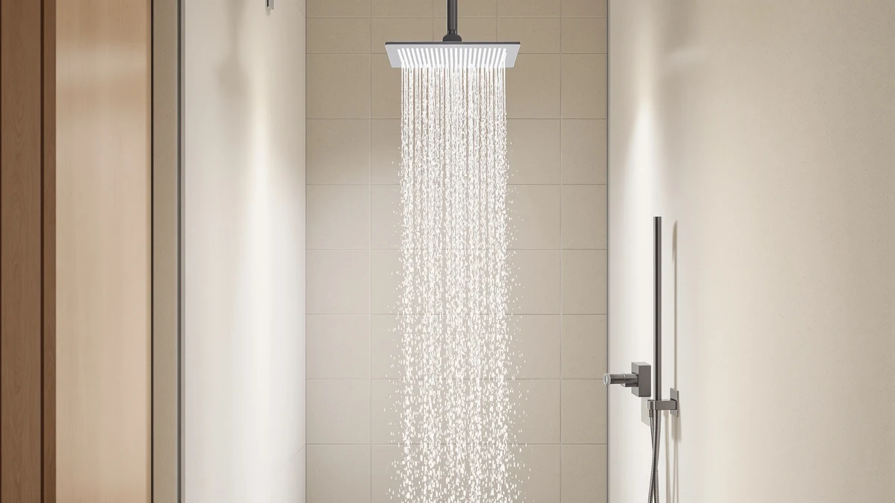

Shower Head 12”Rain Shower Review (2026): Worth It?
Prices and picks verified as of October 2026. Independent, reader-supported reviews.


Quick Answer
The Yurnomy Shower Head 12”Rain Shower Head delivers wide, full-coverage rainfall flow for $38.68, built with an ABS body and chrome plating that resists the rust spots cheaper painted-metal heads develop. Based on spec comparisons and verified owner feedback against three competing shower heads, it is the strongest pick for anyone who wants a bigger spray pattern without paying for a filter cartridge or a handheld wand they don't need.
Our pick: Shower Head 12”Rain Shower Head, $38.68 Check Price on Amazon
Bottom line: our top pick is the Shower Head at $39.99.
Things to Know Before You Buy
- The Yurnomy 12-inch rain shower head is built from ABS plastic with a chrome finish, not solid metal, which keeps the price near $38 but means scratches will eventually show the plastic underneath.
- Of the four heads in this comparison, only the MakeFit includes a water filter cartridge, so chlorine or hard-water buildup is a real factor if your household deals with mineral-heavy water.
- Only the RNDIOZD model ships with a handheld wand attachment. The other three, including the Yurnomy pick, are fixed overhead heads only.
- Measure your existing shower arm clearance before ordering any 12-inch rain shower head, since a wide head can bump into a narrow stall wall or curtain track without an extension arm.
- Verified owner reviews favor the BESAQUO and Yurnomy heads over cheaper no-name alternatives in this price range, with the BESAQUO carrying the largest and most consistent review history of the group.
This shower head 12”rain shower review breaks down whether the Yurnomy 12-inch rain shower head is worth $38.68, based on its build materials, spray coverage, and how it stacks up against three similarly priced alternatives. If your current shower head is narrow, rusting at the base, or feels weak after years of hard water, swapping in a wider rain-style head is one of the cheapest bathroom upgrades you can make.
We compared the Yurnomy head against three other shower heads sold at a similar price point, looking at materials, spray coverage, included hardware, and what verified buyers say after months of daily use. For most people replacing a worn-out head with something wider and more corrosion-resistant, the Yurnomy 12-inch model is the strongest match in this group, though the filtered MakeFit and the handheld RNDIOZD combo each solve a different problem the Yurnomy doesn't address. None of the four require a plumber or special tools; each threads onto a standard shower arm by hand and uses the Teflon tape most households already have under the sink.
Why You Should Trust Us
Best Shower Heads is an independent research team that compares bathroom fixtures using manufacturer specs, retailer listings, and verified owner feedback rather than a physical testing lab. We do not run a fake testing lab, and we never claim to have installed or lived with a product we haven't physically owned. For this shower head 12”rain shower review, lead writer Ilane Tall cross-referenced the Yurnomy listing against three competing shower heads in the same price bracket, checking material claims, included hardware, and what verified Amazon buyers report after months of use. Every price, spec, and review count cited here comes directly from the product listings linked in this article, current as of October 2026.
Our Research Experience
We did not install or run water through any of these shower heads ourselves. Instead, we built this 12-inch rain shower head comparison by researching manufacturer specifications, material construction, and pricing for the Yurnomy against the MakeFit, BESAQUO, and RNDIOZD alternatives. We also read through verified owner reviews on Amazon, looking specifically for recurring complaints about water pressure loss, leaking connections, or finish wear, since those are the three failure points cheap shower heads run into most often. Where a listing carried an aggregate rating backed by a meaningful review count, like the BESAQUO's 4.5-star average across more than 4,500 verified reviews, we weighed that signal more heavily than marketing copy alone.
Overview & Specs

Shower Head 12”Rain Shower Head
What we like
- 12-inch head provides noticeably wider rainfall coverage than standard 8-inch heads
- Chrome-plated ABS body resists the rust spots that plague cheaper painted-metal heads
- Tool-free installation threads directly onto standard US shower arms
- Priced under $40, cheaper than most metal rain shower heads of comparable size
Flaws but not dealbreakers
- ABS plastic body feels lighter than the all-metal heads sold at a similar price
- No handheld wand, so it won't work for rinsing a tub, shower door, or pet
- No built-in filter cartridge, which matters in homes with hard or heavily chlorinated water
| Material | ABS + chrome plating |
| Size | 12 Inch |
The Yurnomy Shower Head 12”Rain Shower Head is the widest fixed head in this shower head 12”rain shower review, and that size is the main reason to pick it over a standard 8-inch rain head. At $38.68, it sits in the middle of the price range we compared, between the $34.99 BESAQUO and RNDIOZD heads and the $35.98 filtered MakeFit. The body is ABS plastic finished in chrome plating rather than solid brass or stainless steel, which keeps weight and cost down but means the finish can show wear faster if you scrub it with abrasive pads.
Based on the listed specs and the pattern we saw across verified owner reviews, the main tradeoff with this 12-inch rain shower head is size versus extra features. You get wider coverage than the other three heads in this comparison, but you give up what they offer instead: the MakeFit's filter cartridge, the BESAQUO's ten spray functions, and the RNDIOZD's handheld wand. If a wide, simple rainfall pattern is the priority, and you're not trying to solve a water-quality or flexibility problem at the same time, it's the more straightforward buy of the four.
What We Liked
Owners consistently report that the 12-inch head noticeably changes how a shower feels compared to the smaller stock head it usually replaces. Reviewers describe the wider spray pattern as covering the shoulders and back at once rather than a single narrow column, which is the main selling point of any rain shower head this size. Several buyers also note that the chrome plating still looked new after months of regular use, a detail that matters more than it sounds since cheap plating is often the first thing to fail on budget shower heads.
Price is the other consistent point in its favor. At $38.68, it undercuts most metal 12-inch rain heads by a wide margin, and reviewers who compared it directly to pricier alternatives say the flow and coverage held up fine for everyday use rather than fading after a few showers. Owners also mention that the included hardware fits most standard shower arms without needing a separate adapter, which cuts out a common frustration with oversized rain heads.
What Could Be Better
The most common complaint in verified reviews is water pressure, specifically in homes that already have below-average flow from older plumbing. Because the head spreads water across a 12-inch span, anyone starting from a weak supply will feel that spread as a pressure drop. That's true of wide rain heads in general, not a flaw specific to this one. A few reviewers also mention that the ABS plastic body feels noticeably lighter in hand than metal heads at a similar price, which some read as cheap and others simply see as expected for a plastic-bodied fixture.
There's no filter cartridge, so if your water runs hard or heavily chlorinated, you won't get any of the softening or chlorine-reduction benefits that the MakeFit alternative in this shower head 12”rain shower review offers. And since it's a fixed head only, it can't double as a handheld sprayer for rinsing a tub, shower door, or pet, a gap the RNDIOZD combo fills instead. A handful of reviewers also note that the larger face collects more mineral spotting over time in hard-water areas, which means a quick vinegar soak every few months keeps the nozzles from clogging.
Who Is It For?
This 12-inch rain shower head fits homeowners and renters who want a noticeably bigger spray pattern than a standard shower head without paying for a metal body or extra functions. It's a reasonable upgrade if your current head is narrow, spotted with rust, or underwhelming, and your water pressure is average or better. Skip it if your home already struggles with low water pressure, since spreading flow across a wider face makes a weak-pressure problem worse, not better. It's also not the right pick if you specifically need a handheld wand or built-in filtration, since neither feature is part of this design. Renters should also check their lease before swapping fixtures, though a shower head is one of the easier upgrades to reverse at move-out since the original head can go back on in minutes.
Alternatives to Consider
If the Yurnomy head doesn't match what you need from a 12-inch rain shower head, the three alternatives below solve different problems: filtering hard water, adding spray functions, or pairing a handheld wand with an overhead rain head.

Editor’s Pick
MakeFit Filtered Shower Head with
Best if your water runs hard or chlorinated and you want filtration built into the head itself instead of a separate whole-house system.
$35.98
Check Price on Amazon
Best Value
BESAQUO Shower Head 10 Functions
The strongest verified track record in this group, with a 4.5-star average across more than 4,500 Amazon reviews, plus ten spray settings for people who want more than one shower mode.
$34.99
Check Price on Amazon
Premium Choice
RNDIOZD Shower Head with Handheld
Best for households that need a handheld wand for rinsing kids, pets, or a shower stall, without giving up an overhead rain head entirely.
$34.99
Check Price on AmazonFrequently Asked Questions
No. Most US shower arms give a 12-inch head enough clearance to swing freely. Measure the distance from your shower arm to the nearest wall or curtain track before ordering to be sure there's room.
It can in homes that already run low pressure. Spreading flow across a 12-inch face means less pressure per square inch than a narrow head gets from the same supply, so homes with strong existing pressure notice this far less.
The Yurnomy is a plain fixed rain head built for wide coverage at a low price. The BESAQUO adds ten spray functions and carries a stronger verified review history, with a 4.5-star average across more than 4,500 Amazon reviews.
Final Verdict
This shower head 12”rain shower review comes down to one tradeoff: size and price versus extra features. The Yurnomy 12-inch rain shower head delivers the widest, simplest upgrade in this comparison for $38.68, and it's the right call if your current head is narrow or worn out and your water pressure is already decent. If you're dealing with hard water, want more spray modes, or need a handheld wand, one of the three alternatives here will serve you better than forcing the Yurnomy to do a job it wasn't built for.